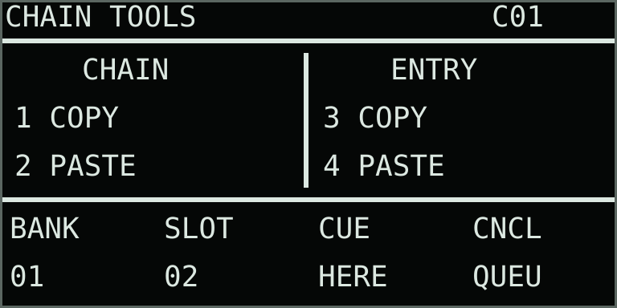

Data layer
Performance loops
The recorder captures performance data—not a mixed audio bounce. Notes, hold time, pitch, the pad played, polyphonic pressure, stack position and Hold/Run changes, and knob gestures remain editable through engine settings and can be replayed at other rates.
Instrument modes: Single, Split, Shared Dual, and Quad use different lane layouts and voice budgets. Compare the modes and choose a layout before following the controls below.
Performance data flow
Replace creates a new base performance. Overdub adds an undoable take without changing the existing loop duration.
Each A01–D16 clip owns notes, gestures, timing, mode, instrument settings, effects, and four audio-source assignments.
The loop reconstructs independent voices; it does not play a stereo bounce of the original performance.
Record a performance
- Select a clip with one of the 16 Step keys. Use Left/Right for banks A–D.
- Choose
REPLACEorOVERDUBon the Performance Loop page. - Press Record. Notes already held are written at the beginning—or at the current loop position during Overdub—so they are not lost. If Loop is already holding the stack scan, each active voice's exact lane or between-lane crossfade is captured too.
- Play pads, change pressure, turn engine encoders, and press Loop to hold or resume stack motion. Parameter and per-pad pressure paths are captured continuously; stack position and Hold/Run are stored as stepped data.
- Press Record again. Replace closes at the exact duration and begins looping; Overdub merges the new pass without changing loop length.
- Press Play to stop or resume performance playback. Free play remains available and shares the eight-voice pool.
A take captures all active parts: notes, pressure, parameter edits, inserts, sends, levels, and any stack holds or Blend available in that mode. In Quad it includes C/D. Removing the take undoes that whole pass across the instruments.
Recording is unquantized. Overlapping notes retain exact onset and duration, velocity, pitch, and which physical pad produced them. Continuous gesture curves interpolate across the loop seam, while recorded stack positions and Hold/Run transitions remain exact. Loop Rate scales note timing and gestures together from 0.25x to 4x.
Recorded versus live Stack Hold: a medium-white Loop key and RECORDED STACK HOLD footer mean the playing clip is holding its stored stack positions. A bright-white Loop key means the physical button is applying a live hold on the Single instrument or focused part in a multi-instrument mode. The live hold overrides recorded motion; switching the live hold off returns the clip to its recorded Hold/Run state. If Tape INRT is active, recorded and live Hold transitions also drive the tape wet path's mechanical stop/start.
Hold individual notes
Hold Shift and press a pad to latch that pad's note. Release both controls and the voice continues; its stable voice color remains on the pad. Use Shift + the same physical pad again to release it. Changing keyboard octave or Pad Mode does not release or remap an existing latch; this lets a latched Keys chord remain active when you enter Rolls. When an octave, Root, or Scale change makes that pad represent another pitch, the latch keeps the same dimmed voice color as an ownership marker. Return to its original mapping and it brightens again. Each pad is independent, up to eight source voices in Single or four per part in Split. In Rolls mode the same gesture latches a grouped stereo roll without consuming a source voice; in Cues mode, Shift+pad keeps its cue-store function instead.
HOLD OFF on knob 4 of Pads & Scale applies to the whole Single instrument, or independently to the focused part in any multi-instrument mode. MAN is the default and leaves every latch active until it is toggled off. Choose 50 ms–60 s to auto-release latched notes. Changing the value reschedules that instrument’s currently latched pads from that moment; returning to Manual cancels their pending automatic release. Each newly latched pad receives the current delay. Latched note-on and note-off times are captured normally by performance recording.
Stop all playing notes
Hold Delete and press Play for Panic. Performance playback stops, an active performance take is closed, and notes, latches, Rolls, and browser preview release with short fades. Long Amp Envelope releases are shortened for this stop. Your sample assignments, recorded performance, and sound settings are retained. Delay and Reverb tails decay naturally. Audio-lane recording continues if it was active.
Timing and launch
One performance loop for all parts: PERF LOOP is a shared page in Single, Split, Shared Dual, and Quad. Replace and Overdub record the combined performance, including each part’s notes and gestures. Rate and Timing affect the current clip across all its parts; tempo, launch, and record-mode controls are also shared. Changing edit focus does not select a separate recorder. Per-part pressure behavior is on Pads & Scale, knob 6.
| Knob | Display | Range | What it controls |
|---|---|---|---|
| 1 | RATE | 0.25–4.00x | Scales note and gesture playback together. |
| 2 | TIME | Free / Beat Sync | Retains wall-clock duration, or stores beat length and follows Thru's Tempo. |
| 3 | LNCH | Off / Beat / Bar | Starts a selected clip immediately, or queues it to the next beat or bar. |
| 4 | BPM | 40–240 BPM | Sets the internal tempo for Beat Sync, launch quantization, and tempo-clocked engines. |
| 5 | MODE | Replace / Overdub | Creates a new base performance or adds an undoable take. |
| 6 | SWNG | 50–75% | Applies swing to tempo-clocked Cutups. |
| 7–8 | Reserved | — | Inactive and available for future Performance Loop controls. |
Thru uses its own Tempo setting; it does not follow Move's native transport. The blue-violet Step LED and QUEUED footer identify a pending launch.
Live multi-instrument mixing: moving a part level or send, or dual-mode Blend/Curve, overrides that parameter’s recorded curve until playback restarts or another clip launches. Use Overdub to save the new movement. Mute is saved part state rather than a recorded mixer gesture. See Mix over a playing clip.
Replace, Overdub, and takes
Replace clears the old event data and establishes take 1 as a protected base. Every completed, non-empty Overdub pass adds a take containing its new notes and pressure/parameter gestures. An empty pass adds nothing.
Undo an overdub
- If recording is active, press Record to finish the take.
- Hold Delete and press Record to remove the newest overdub’s notes and gestures. Loop playback can continue.
- Repeat to remove earlier overdubs in reverse order. The base take stays protected; use Replace or reset the clip to start a new foundation.
Knob 2, UNDO TAKE, on Overdub Takes performs the same action. The other cells are reserved; Record Mode remains on Performance Loop. In multi-instrument modes, take undo affects the latest pass across all instruments.
Undo scopes differ: Delete+Record is take-only undo. The curved-arrow Undo key is the one-level safety undo for a destructive clip reset, lane-source replacement, clear, or sample edit. Stop recording before using it.
Clip banks
Each A01–D16 clip stores its four sample assignments, Single, Split, Shared Dual, or Quad mode, instrument setups, shared effects, duration, rate, timing mode, captured tempo, notes, gestures, and take membership. Dual modes recall A/B; Quad recalls A–D. A clip holds up to 1,024 note events and 8,192 gesture points over a maximum 120 seconds.
| Gesture | Clip action |
|---|---|
| Step | Select immediately or queue the clip according to Launch. |
| Shift + Step | Copy the current clip—including sources and all takes—to the destination. |
| Delete + Step | Reset the complete destination clip, including source ownership. Undo can undo the last reset. |
| Left / Right | Move between banks A–D from the waveform or parameter view. |
Copy and paste clips
In Clip Overview, Performance Loop, Overdub Takes, or Pattern Fade, tap and release Copy to snapshot the current clip. To copy another source without launching it, hold Copy and press its Step. In Clip Overview, Track 1–4 selects the clip bank. From the other performance pages, hold Copy while pressing a Track; add Shift for paste, then press the destination Step.
Hold Shift + Copy and press a destination Step to paste without launching it. Repeat on more Steps for more copies. A Shift+Copy tap pastes into the current clip; stop performance playback first to replace the current clip. Copy/paste is blocked during recording, clip preparation, and a pattern fade. The curved-arrow Undo key restores the last pasted destination.
The clipboard retains the copied notes, all takes, per-part programs, cues, stack paths, and sample assignments even if the source is edited afterward. Audio files are referenced, not duplicated. Clipboard contents are temporary and are not saved with the set. Shift+Step retains its direct current-clip-to-destination copy.
Fade between patterns
Open Pattern Fade, after Performance Loop, or select it in Capture + Menu. Set MODE to FIX for a fixed TIME, or RAND for a duration chosen between LOW and HIGH. Then select a different clip with the usual bank buttons. Durations reach 30 seconds; CUT keeps the immediate change. A playing performance changes at its existing loop boundary once the destination samples are ready.
| Knob | Display | Range | What it controls |
|---|---|---|---|
| 1 | TIME / NOW | CUT–30 s | In FIX, sets the fixed transition duration, with one-second steps above 10 seconds. In RAND, NOW shows the chosen duration as a readout; it shows a dash before the first change. |
| 2 | CURVE | LIN / IN / OUT / SMTH / PWR | Fade shape: linear, ease in, ease out, smoothstep, or equal power. Curve changes are smoothed. |
| 3 | XFADE | 0–100% | Touch to engage Hold without changing the position; turn left toward the source or right toward the destination. Finger release leaves the blend held. CURVE sets the balance along that travel. |
| 4 | HOLD | OFF / ON | Hold or resume the fade without stopping either performance. Before a change, HOLD on arms manual mode. Clicking the main encoder toggles Hold on this page. |
| 5 | LOW | CUT–30 s | Shortest random transition. Available in RAND; raising it past HIGH also raises HIGH. |
| 6 | HIGH | CUT–30 s | Longest random transition. Available in RAND; lowering it below LOW also lowers LOW. |
| 7 | MODE | FIX / RAND | Timing mode for subsequent transitions. The current blend keeps its chosen duration. |
| 8 | DONE | Clockwise | Finish at the destination with a short, smooth transition. |
The compact strip above the controls shows the source and destination, such as A01>A02, and the current blend position. H means Hold is on. LOW and HIGH remain reserved boxes in FIX. The buffer diagnostic is now FADE BUF MISSES in Shift + Menu.
Random timing
For changing transition lengths without programming each chain entry, set MODE to RAND, LOW to 2 s and HIGH to 12 s. Each actual change draws one duration uniformly across that range, including values between the displayed knob steps. NOW shows that choice. Selecting or preparing a destination does not draw the duration; launching it does.
Timing mode, fixed TIME and both bounds are saved globally and apply to manual clip selections and the chain. Edits affect the next transition. Hold, manual crossfading and resuming keep the duration already chosen. Equal bounds give a consistent duration; both at CUT give immediate changes. If a fade outlasts a performance loop, the performances keep looping and the chain waits until the fade finishes.
Manual crossfading
Touch knob 3 / XFADE to engage Hold at the current position, then turn it in either direction. Lifting your finger leaves the blend held; it does not restart the timed fade. Click the main encoder, or turn HOLD off with knob 4, to resume.
For a fully manual change, touch XFADE before selecting the destination. The page shows HOLD: SELECT PATTERN. Choose another clip normally: after sample preparation and the usual launch boundary, the change starts held at 0%. This also works when the selected duration is CUT. Clicking the main encoder while waiting cancels the arm.
Both endpoints stay reversible while Hold is on. At 0% you hear the source; at 100% you hear the destination, and you can still turn back. Both performances continue running. Turn DONE clockwise to commit the destination, or turn Hold off to continue toward it. Shift + knob 8 / FROM returns smoothly to the source and commits it instead. Source return turns automatic chaining off, keeping the restored performance running. Both choices release the unused performance after its audio has faded out. With a chosen duration of CUT, releasing Hold finishes with a short smooth transition.
LIN keeps the two gains complementary. IN spends longer near the source; OUT moves toward the destination sooner. SMTH softens both ends. LIN, SMTH and PWR give an equal midpoint at XFADE 50%; IN and OUT shift that balance. PWR maintains equal power through the blend and is useful for different material; correlated samples can become louder around the midpoint.
The outgoing pattern keeps its own sample bank, engine settings, automation and effect histories. The destination starts its own performance at the beginning. This blends two performances; it does not turn note numbers, engine choices or sample files into intermediate values. Each performance retains its eight-voice instrument. Single, Split, Shared Dual and Quad can fade, including between modes.
New notes and edits affect the destination, which is also shown by the waveform and parameter pages. Momentary note releases, Play stop and Panic reach the outgoing performance too. Both performance clocks continue while Hold is on. The waveform footer shows the source, destination and blend position.
Only one fade runs at a time. Another clip selection waits until it finishes; a held fade also holds chain advancement. Use HOLD off or DONE to continue. Finish the fade before recording, clearing/copying clips or restoring a set. Reopening Thru recalls the committed pattern; an in-progress blend is temporary. Crossfade movements are temporary; chains recall their saved timing and curves.
Compose and save chains
Thru stores 16 chains, each with up to 64 entries. An entry selects a pattern from the shared A–D banks and gives it a repeat count or WAIT. Chains save automatically with your set. Your previous chain opens as CHAIN 01, with its entries and global Pattern Fade behavior retained.
05x2 refers to pattern A05 and two repeats; xW means WAIT. The header gives the selected entry’s pattern with its bank letter. C02 identifies the chain being edited; RUN01 identifies the chain currently performing. Browsing another chain keeps the current chain running. An inverted cell marks editing focus; > marks playback and + marks a queued entry.- Press Shift + Play twice from the waveform page to reach Chain.
- Press a Step key to select an entry. Left/Right select pages 1–4, covering entries 01–64.
- Turn the main encoder to choose pattern A01–D16. Use Up/Down to set 1–16 repeats, or turn down past 1 to choose WAIT.
- Click the main encoder to enable or disable chain playback. Play retains its usual start/stop function.
- Hold Shift and click the main encoder to insert the active pattern before the selected entry. Delete + Step removes an entry and closes the gap; Shift + Step moves the selected entry, including its fade settings.
The first five Chain parameter controls retain their existing positions. Press Menu from the grid to open them; Menu or Back returns to the grid. The same eight dials also work directly on the grid. Step selection and Left/Right paging work on the Chain, Chain Fade and Entry Fade parameter pages.
| Knob | Display | Range | What it controls |
|---|---|---|---|
| 1 | CHN | OFF / ON | Enable or disable automatic chain playback. |
| 2 | SLOT | 1–64 | Entry selected for editing. |
| 3 | CLIP | 1–64 | Pattern reference: 1–16 are A01–A16, then B, C and D. |
| 4 | REPT | WAIT / 1–16 | Pattern loop repeats. WAIT continues until NEXT is requested, including on the final entry with END set to STOP. |
| 5 | CLR | Turn | Clear the selected entry. Delete + Step removes and compacts it instead. |
| 6 | BANK | 1–16 | Browse another saved chain without changing the performing chain. Choose an entry, then use Chain Tools CUE HERE or Shift + knob 8 / NEXT to queue it. CHN on also queues the selected entry when a different chain is already performing. |
| 7 | END | LOOP / STAY / STOP | Repeat the chain; finish chaining and leave the final pattern playing; or stop the performance transport at its final loop boundary. STOP keeps the chain armed so Play restarts it from the first entry. Normal note releases and effect tails continue. |
| 8 | NEXT | Clockwise | Request the next entry of the performing chain at the next pattern-loop boundary, including from WAIT. Shift + this knob queues the selected entry of the chain being edited. A pattern without recorded performance data changes as soon as the destination is ready. |
The curved-arrow Undo key restores the last chain edit, including deletion, insertion, movement, pattern/repeat changes and fade settings. Consecutive dial changes to one field are grouped as one edit. Chain undo shares the existing single safety-undo slot with clip and sample edits; it does not rewind performance playback.
Patterns and their sample assignments remain shared between chains. Editing a pattern changes every chain that references it. Copy the pattern first when you want an independent variation.
Copy, paste and launch
Duplicate a recorded clip from the Chain page: select the source entry and tap/release Copy. Select a destination entry, then hold Shift and tap/release Copy. The clipboard stores the recorded performance, all takes, source assignments, and sound programs, together with the source entry’s repeats and fade. Paste creates an independent clip in an unused A–D slot and assigns it to the destination entry. The previous destination clip and the source clip stay intact.
For fewer button releases, hold Copy and press a source Step, then add Shift and press a destination Step. Shift is read for each Step, so Copy can stay held throughout. The operation does not launch the entry. Left/Right selects the entry page; Bank selects a chain. The confirmation names the new clip and destination, such as CLIP A03 TO E08.
These clip shortcuts work in the Chain grid and all chain parameter pages, including Entry Fade. Whole-chain and reference-only entry copy remain explicit Chain Tools actions below. Copies from Clip Overview can also be pasted into a chain; the destination retains its existing repeats/fade, or defaults to one repeat if empty. Paste reports No unused clip slots if all 64 slots are occupied or reserved by an arrangement. Undo restores the old destination. An unchanged, unused duplicate is also reclaimed while the clipboard still holds its source; a duplicate already launched, changed, referenced elsewhere, or followed by a new clipboard copy is retained.
Choose Chain Tools after Entry Fade, or through Capture + Menu → Pages. Knob 1 / COPY under CHAIN stores all 64 entries, repeats, ending behavior and fade defaults. Select another BANK with knob 5, then turn knob 2 / PASTE clockwise to create a variation. Knobs 3 / COPY and 4 / PASTE under ENTRY work the same way for a single selected SLOT, including its transition settings. Pattern references remain shared; copying a chain does not duplicate its patterns or audio files. Paste is reversible with Undo.

| Knob | Display | Range | What it controls |
|---|---|---|---|
| 1 | 1 COPY | Clockwise | Copy the chain being edited to a temporary clipboard. |
| 2 | 2 PASTE | Clockwise | Replace the selected chain with the copied arrangement. Undo restores its previous contents. |
| 3 | 3 COPY | Clockwise | Copy the selected entry, including repeats and fade settings. |
| 4 | 4 PASTE | Clockwise | Replace the selected entry with the copied entry. |
| 5 | BANK | 1–16 | Chain being edited. Browsing leaves the performing chain running. |
| 6 | SLOT | 1–64 | Entry being edited or chosen as a launch point. |
| 7 | CUE / HERE | Clockwise | Queue the selected occupied entry. It launches after sample preparation at the current performance’s next loop boundary. Without a recorded loop, it launches when ready. |
| 8 | CNCL / QUEU | Clockwise | Cancel the explicit queued chain launch. The current chain continues normally. |
The queued destination appears in the grid footer and its Step key turns blue-violet when its chain is visible. Selecting another entry for editing does not move the queued launch. Play remains the transport start/stop control. Copy/paste clipboards are temporary; completed arrangement changes save with the set.
Save transition settings
From the Chain parameter page, move forward to Chain Fade and Entry Fade, or choose either in Capture + Menu → Pages. The status line shows the effective source, duration or random range, and curve, even when settings are inherited. GLBL, CHAIN and ENTRY identify the source. Start with Chain Fade MODE set to GLBL: the chain follows the existing global Pattern Fade settings. Choose FIX or RAND to store independent defaults with that chain. Choosing FIX or RAND from GLBL copies the current global settings, ready for editing.
On Entry Fade, MODE DEF follows that chain’s default. Choose CUT, FIX or RAND to give just the selected entry its own transition. The transition belongs to the destination entry: its settings describe how we arrive at that pattern. Turn knob 3 / SLOT to select any of the 64 chain entries without leaving Entry Fade. PATT under knob 4 shows the pattern assigned to that entry; it is a readout. Selecting an entry changes the editing target while playback continues. Step keys also select entries on the current page; Left/Right page through all 64.
| Knob | Display | Range | What it controls |
|---|---|---|---|
| 1 | TIME | CUT–30 s | Fixed fade duration. Available in FIX. |
| 2 | CURVE | LIN / IN / OUT / SMTH / PWR | Saved fade shape. Available in FIX or RAND. |
| 3 | SLOT | 1–64 | Entry selected for editing, on Entry Fade only. The selected entry’s fade settings appear immediately. |
| 4 | PATT | A01–D16 / – | Pattern assigned to the selected entry, or a dash for an empty entry. Readout on Entry Fade only. |
| 5 | LOW | CUT–30 s | Shortest random transition. Raising it past HIGH raises HIGH too. |
| 6 | HIGH | CUT–30 s | Longest random transition. Lowering it below LOW lowers LOW too. |
| 7 | MODE | GLBL / FIX / RAND, or DEF / CUT / FIX / RAND | Chain Fade chooses global or stored defaults; Entry Fade chooses inherited or individual settings. |
Other positions show reserved boxes. Random transitions choose one duration when they launch. Pattern Fade shows the actual duration as NOW and MODE as CHN during a stored override. Timing controls remain on Chain Fade or Entry Fade; live XFADE, Hold, Curve and DONE stay available.
Repeats retain the existing timing: counted at pattern-loop boundaries while no fade is active. Long fades can span several pattern loops, and advancement waits until the blend finishes. Touching XFADE holds the blend and chain advancement; resume or use DONE to continue. NEXT can be requested while held and waits until the fade completes. Consecutive entries referencing the same pattern restart it without a two-pattern fade.
Changes launch only once the destination samples are ready. Selecting a pattern manually disables chaining. Selecting another saved chain leaves the current performance playing and disables automatic advancement until that chain is enabled. An entry without recorded performance data can be used as a live-playing preset; use NEXT to continue.
Capacity behavior
As a long or highly detailed recording approaches capacity, Thru removes nearly identical gesture points first. Playback continues at capacity, existing gestures retain their latest endpoint, and the footer reports CLIP FULL with note and gesture counts.